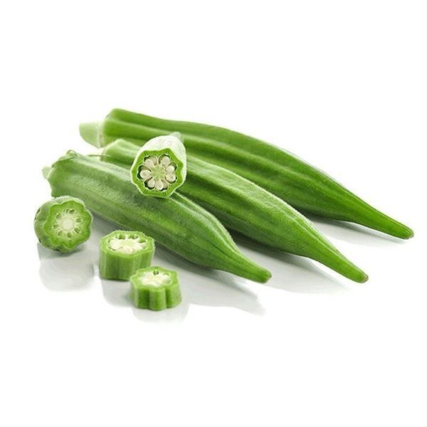

Fresh Oranges
Oranges are a vibrant citrus fruit, cherished for their refreshing sweetness and tangy flavor. With their bright peel and juicy segments, they’re perfect for eating fresh, squeezing into juice, or adding zest to both sweet and savory dishes. In Zimbabwean homes, oranges are a common treat, enjoyed as a thirst-quencher during warm afternoons or sold in local markets where their fragrance fills the air. Nutritionally, oranges are a powerhouse of vitamin C, boosting immunity and skin health. They also provide fiber for digestion, potassium for heart health, and antioxidants like flavonoids that help protect against inflammation. Their natural sugars make them a quick energy source, while their high water content keeps the body hydrated.
Mangoes
Mangoes are often called the “king of fruits,” celebrated for their vibrant color, tropical sweetness, and rich aroma. With golden flesh that melts in the mouth, they’re perfect for eating fresh, blending into juices, or adding a burst of flavor to salads and desserts. In Zimbabwean homes, mangoes are a seasonal delight, enjoyed straight from the tree or sold in bustling markets where their fragrance fills the air. Nutritionally, mangoes are packed with vitamin C for immunity, vitamin A for eye health, and fiber for digestion. They also contain antioxidants like beta-carotene, which support skin vitality and overall wellness. Their natural sugars provide quick energy, making them a refreshing snack during hot days.
Bananas
Bananas are one of the world’s most beloved fruits, celebrated for their natural sweetness, convenience, and nutritional value. With their bright yellow peel and soft, creamy flesh, they’re perfect for snacking, blending into smoothies, or baking into breads and cakes. In Zimbabwean homes, bananas are often enjoyed fresh as a quick energy boost or paired with other fruits in vibrant salads. Nutritionally, bananas are rich in potassium, which supports heart health and helps regulate blood pressure. They also provide vitamin B6, aiding metabolism and brain function, and dietary fiber, which promotes healthy digestion. Their natural sugars — glucose, fructose, and sucrose — make them an excellent source of quick energy, ideal for athletes and busy lifestyles.
Avocados
Avocados are a creamy, nutrient-rich fruit celebrated worldwide for their flavor, versatility, and health benefits. Native to Central and South America, they’ve become a staple in kitchens across Zimbabwe and beyond. Their buttery texture and mild taste make them perfect for spreading on bread, blending into smoothies, or adding richness to salads and guacamole. Nutritionally, avocados are packed with healthy monounsaturated fats that support heart health, along with vitamin E for skin vitality, potassium for blood pressure regulation, and fiber for digestion. They also contain antioxidants like lutein, which promote eye health. Culinarily, avocados shine in both savory and sweet dishes: mashed into dips, sliced over grain bowls, or even whipped into desserts like chocolate mousse.

Lady Fingers/Okra
Okra (often called lady’s fingers) is a beloved vegetable known for its tender pods and unique texture. With its mild flavor and natural thickening qualities, it’s a staple in stews, curries, and soups. In Zimbabwean kitchens, okra is often simmered with tomatoes and onions, creating a silky dish that pairs beautifully with sadza. Nutritionally, okra is rich in fiber, vitamin C, and folate, supporting digestion, immunity, and overall wellness. Its mucilaginous quality makes it perfect for adding body to broths, while roasting or grilling brings out a crisp, earthy taste. More than just a vegetable, okra is a heritage crop that connects everyday meals with tradition and nourishment.